내 돈이 어디로 가는지, 포핏이 추적해 드려요 🐾
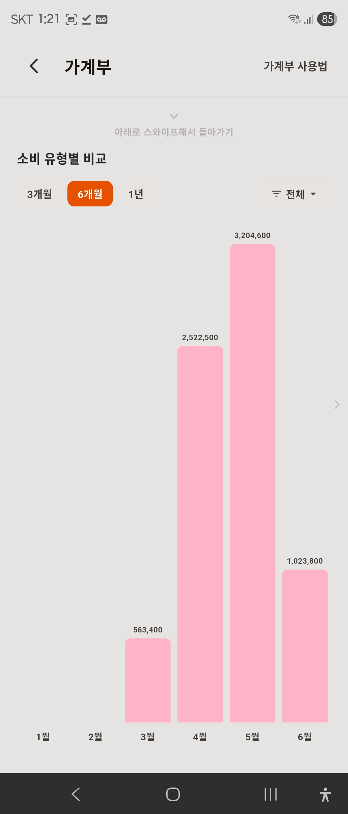
대시보드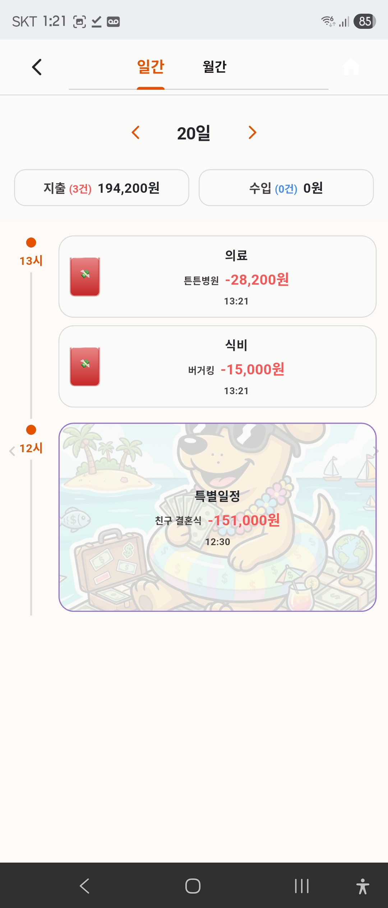
일간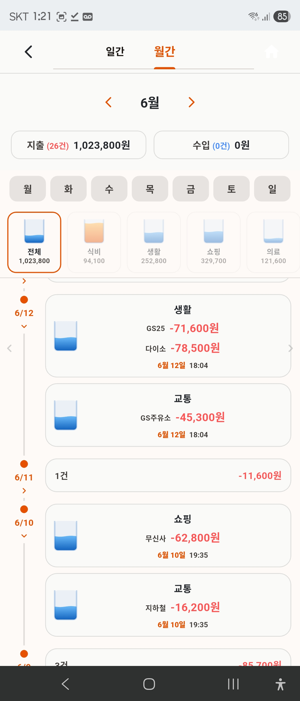
월간대시보드 ↔ 일지, 일간 ↔ 월간 — 다 좌우 스와이프!
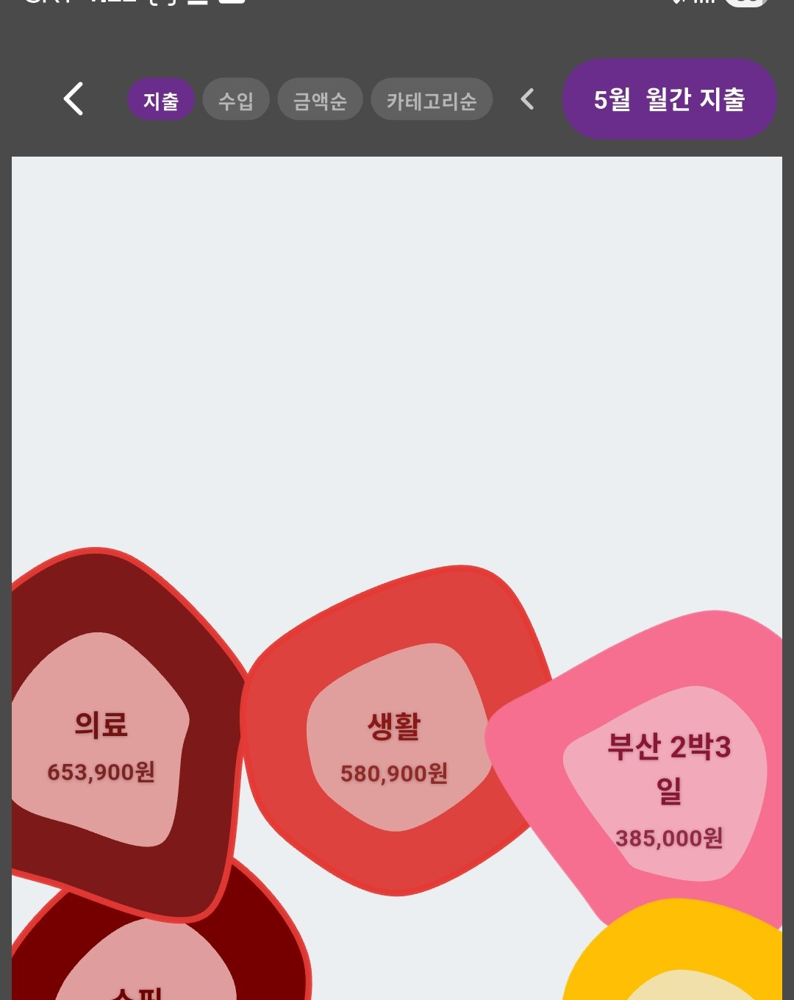
좌우 더블탭(가운데보다 살짝 아래!) = 일간↔월간 · 왼쪽 위는 정렬/필터
홈에서 내돈GPS를 누르면 처음 보이는 화면이에요. 이번 달 기록 현황, 소비 목표, 합계를 한 번에 봅니다.
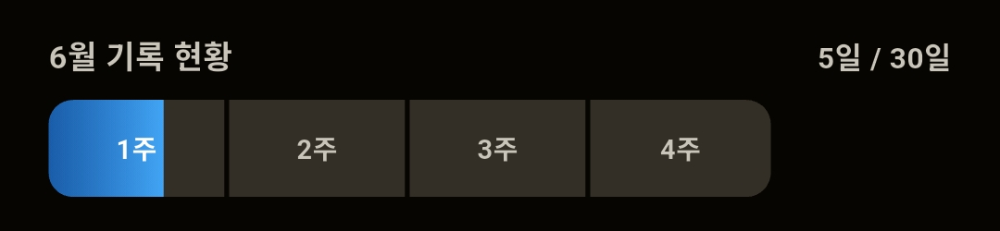
한 달을 주 단위 네 칸으로 보여줘요. 일요일 마감으로 1주일에 한 칸씩 찹니다. 지나간 주(어둡게 변한 칸)를 누르면 그 주 소비에 대해 포핏이 진단 한마디를 해줘요. 사용 기간이 짧으면 아직 분석할 내용이 없다고 나올 수 있어요.
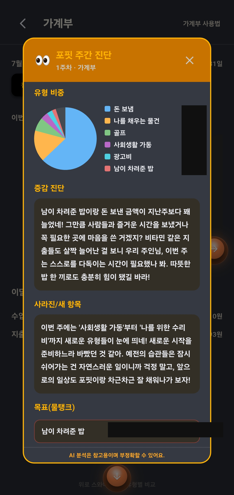
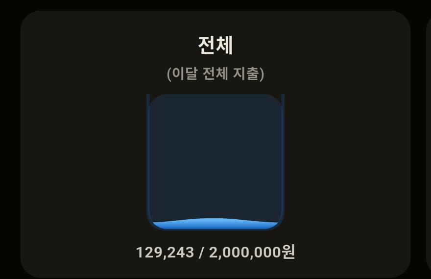
소비 유형마다 물탱크가 하나씩 있어요(좌우로 넘겨보기). 돈을 쓸수록 물이 차오르고, 목표를 넘으면 초과로 표시됩니다.
탱크를 탭하면 팝업으로 목표 금액 입력칸이 떠요. 설정하지 않은 항목은 이전 달 소비 기록이 기본 목표로 잡히고, 나중에 언제든 바꿀 수 있어요.
비슷한 유형은 탱크를 묶어 하나의 목표로 관리할 수 있어요. 탱크 카드의 + 버튼으로 묶고, 다시 눌러 뺄 수 있습니다.
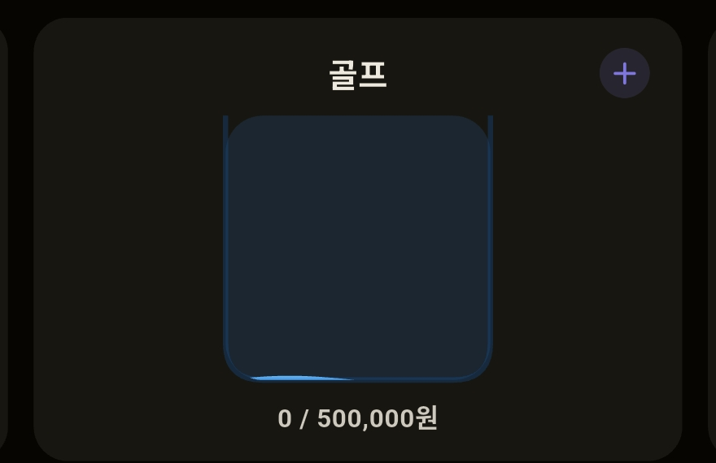
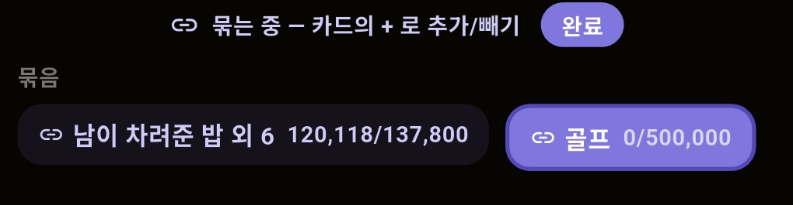
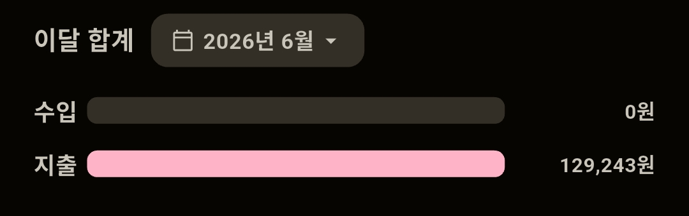
대시보드 맨 아래에는 월별 수입·지출 합산이 막대로 나와요. 달력 버튼으로 다른 달도 볼 수 있어요.
화면을 위로 스와이프하면 비교 페이지가 나와요. 3개월·6개월·1년 기간을 골라 월별 지출을 막대로 비교하고, 오른쪽 필터로 전체 ↔ 소비 유형별을 전환할 수 있습니다.
기록된 내역을 시간순으로 보는 화면이에요. 상단 탭을 누르거나 화면을 좌우로 스와이프해서 일간 ↔ 월간을 오갑니다.
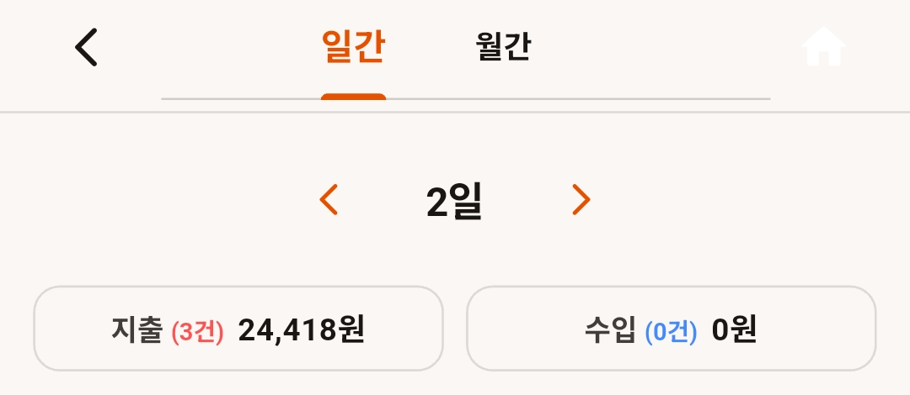
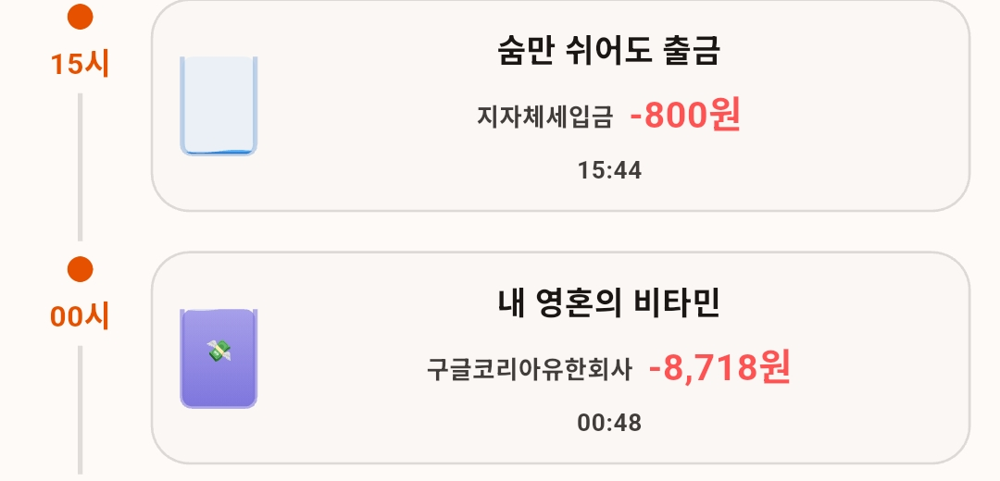
하루 내역이 시간 타임라인으로 나와요. 카드마다 붙은 미니 물탱크는 대시보드의 그 탱크예요 — 해당 소비 유형의 현재 누적이 얼마나 찼는지 항목 옆에서 바로 보여줍니다.
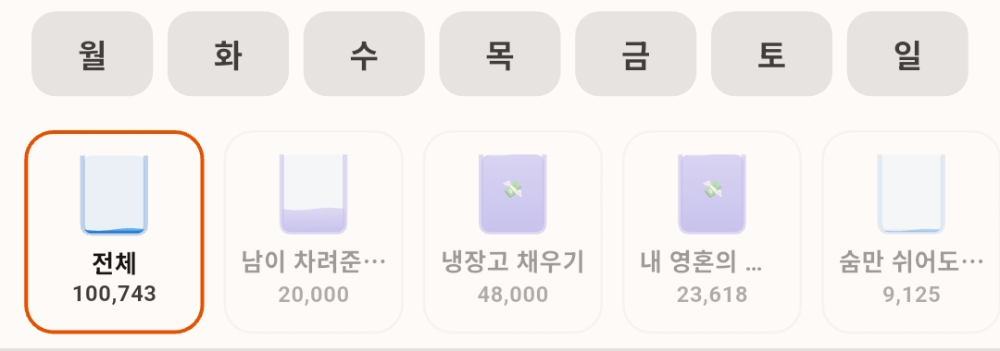
월간에서는 내역이 날짜 라인으로 정렬돼요. 위쪽 요일 버튼을 누르면 그 요일의 소비만 모아볼 수 있고, 그 아래 탱크들이 필터 버튼이에요 — 유형별 누적을 한 줄에서 한 번에 보고, 탱크를 누르면 그 유형 내역만 화면에 표시됩니다.
목록의 항목을 탭하면 상세 내역이 떠요. 거기서 수정·삭제할 수 있습니다.
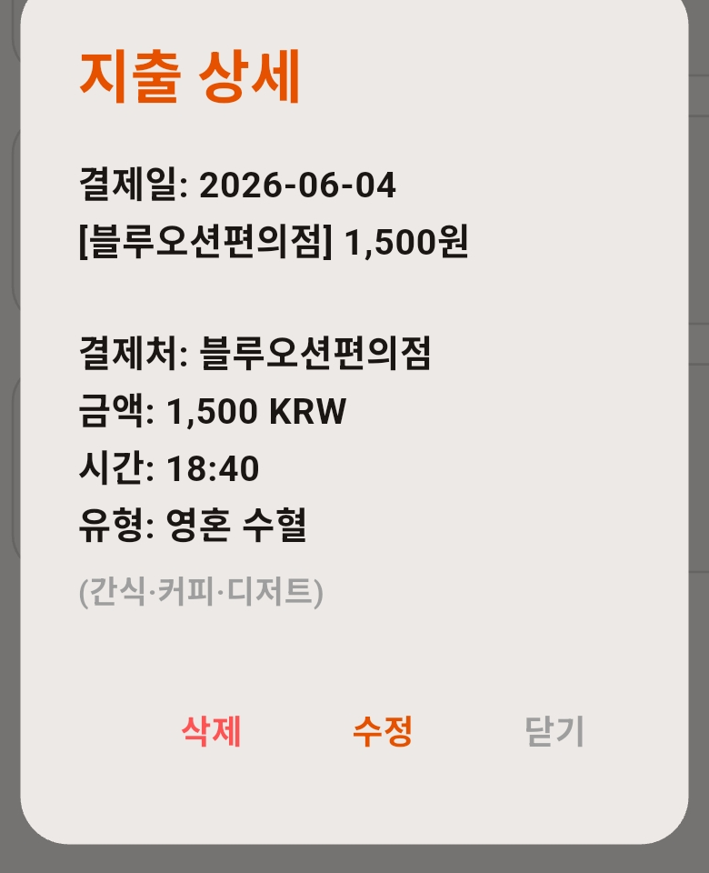
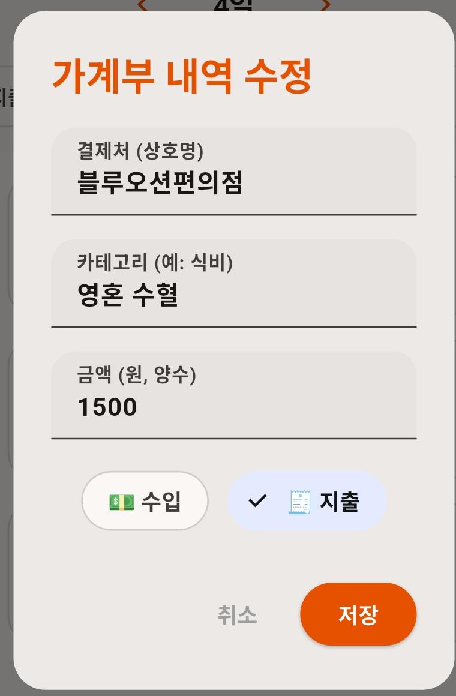
숫자 대신 그림으로 봐요. 소비 유형마다 말랑한 블롭이 하나씩 떠 있고, 금액이 클수록 블롭이 크고 진해집니다.
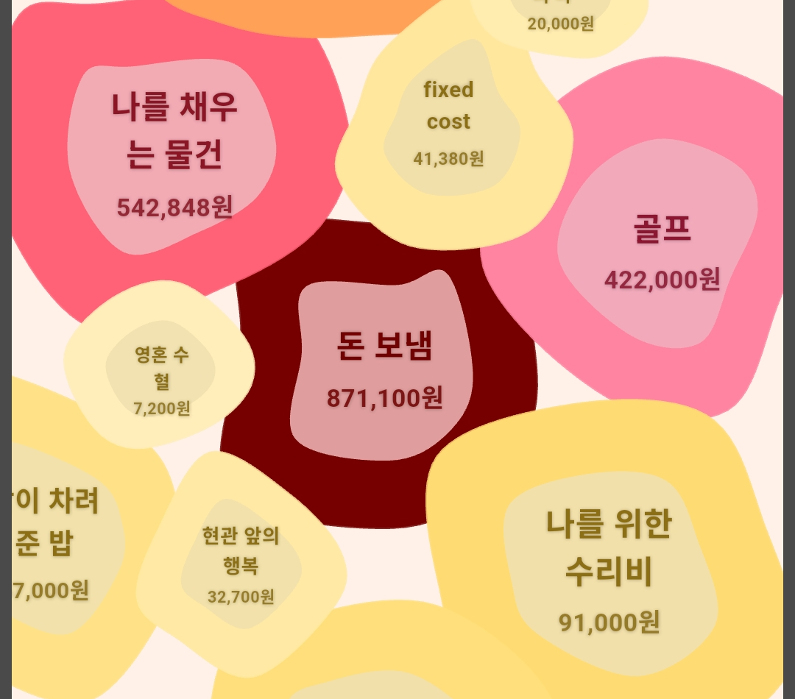
시각화 화면은 일간과 월간 두 개예요. 화면 좌우를 더블탭하면 일간 ↔ 월간이 번갈아 바뀝니다.
지출 ↔ 수입은 화면 왼쪽 위의 토글 버튼으로 전환해요. 누르면 화면 이동 없이 블롭만 스르륵 바뀝니다.
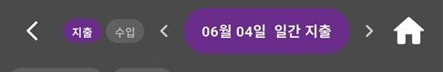
월간 화면 상단에는 금액순 · 카테고리순 정렬 버튼이 있어요(일간에는 없어요). 누르면 꾸물거리던 블롭들이 움직여서 줄을 섭니다. 다시 누르면 해제돼요.
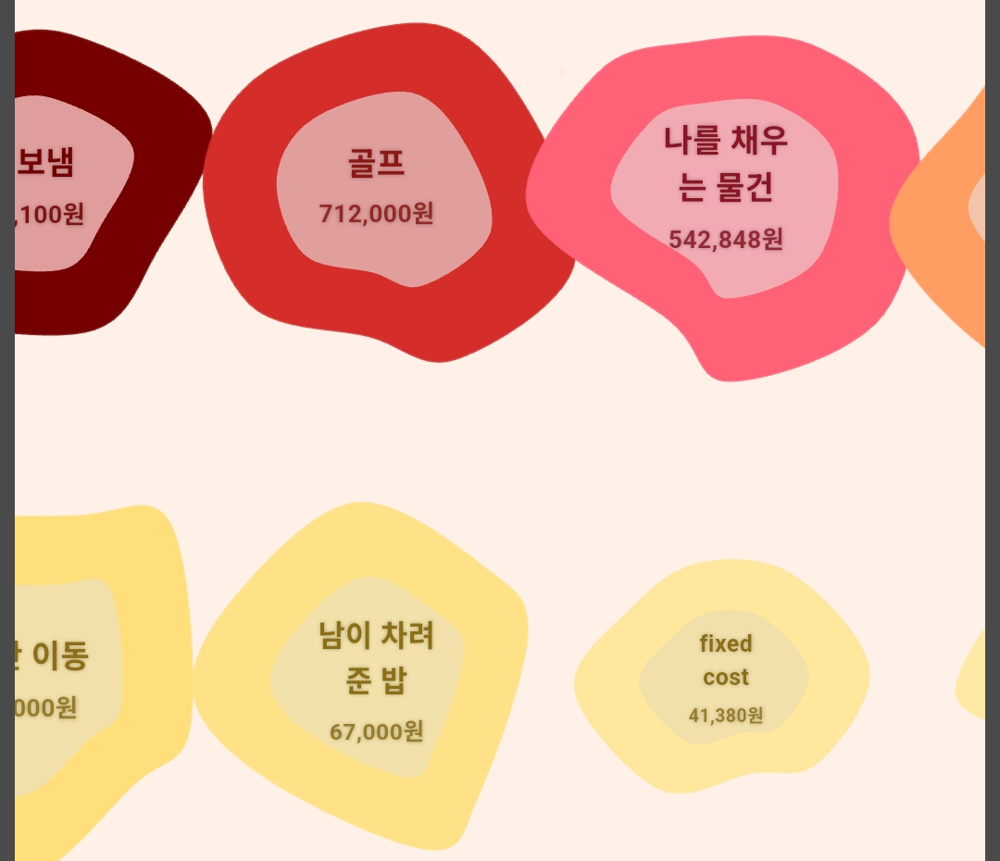
블롭은 꾹 누른 채로 끌면(롱프레스 드래그) 원하는 자리로 옮길 수 있어요. 겹쳐서 안 보이면 보기 편하게 배치하면 됩니다.
화면 자체도 자유롭게 움직여요 — 두 손가락을 벌리거나 오므리면 확대·축소(줌), 화면을 끌면 상하좌우 이동(팬 스크롤)이 됩니다. 블롭이 많아지면 줌아웃해서 전체를 보거나, 확대해서 작은 블롭을 살펴보세요.
블롭을 탭하면 그 유형의 상세 내역이 떠요. 항목 오른쪽 점 세 개(⋮)를 누르면 수정·삭제할 수 있습니다.
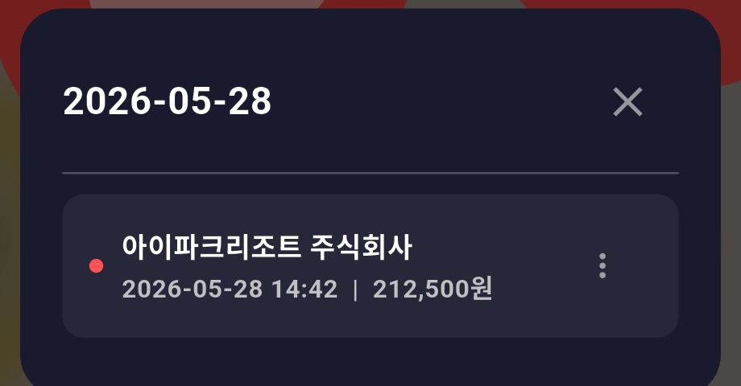
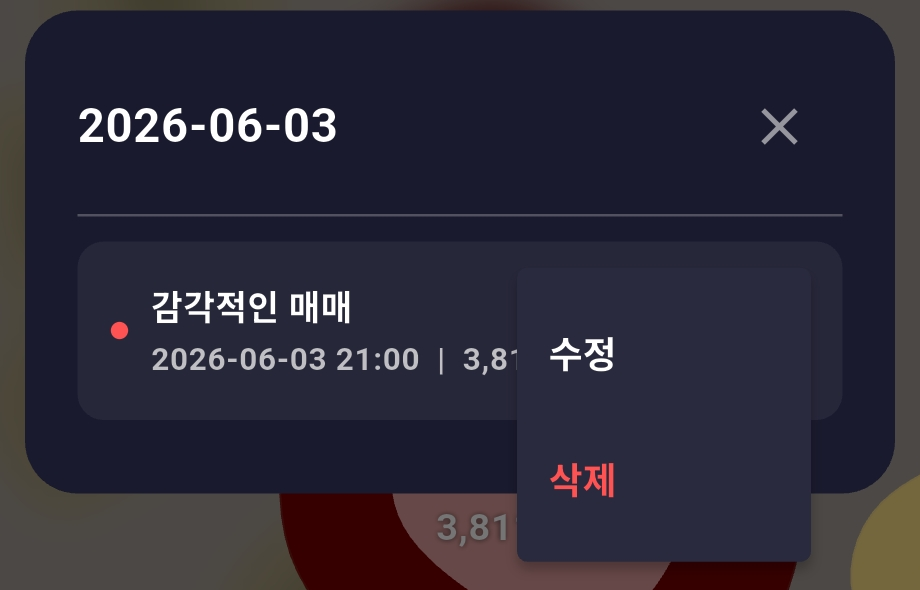
가계부 항목 하나하나에 메모를 붙일 수 있어요. "이건 왜 썼더라" 싶은 지출에 한 줄 남겨두면 나중에 한눈에 알아봐요.
일지(일간·월간)에서 항목의 금액을 탭하면 상세 팝업이 떠요. 팝업 제목 오른쪽 메모 아이콘을 누르면 입력창이 열립니다.
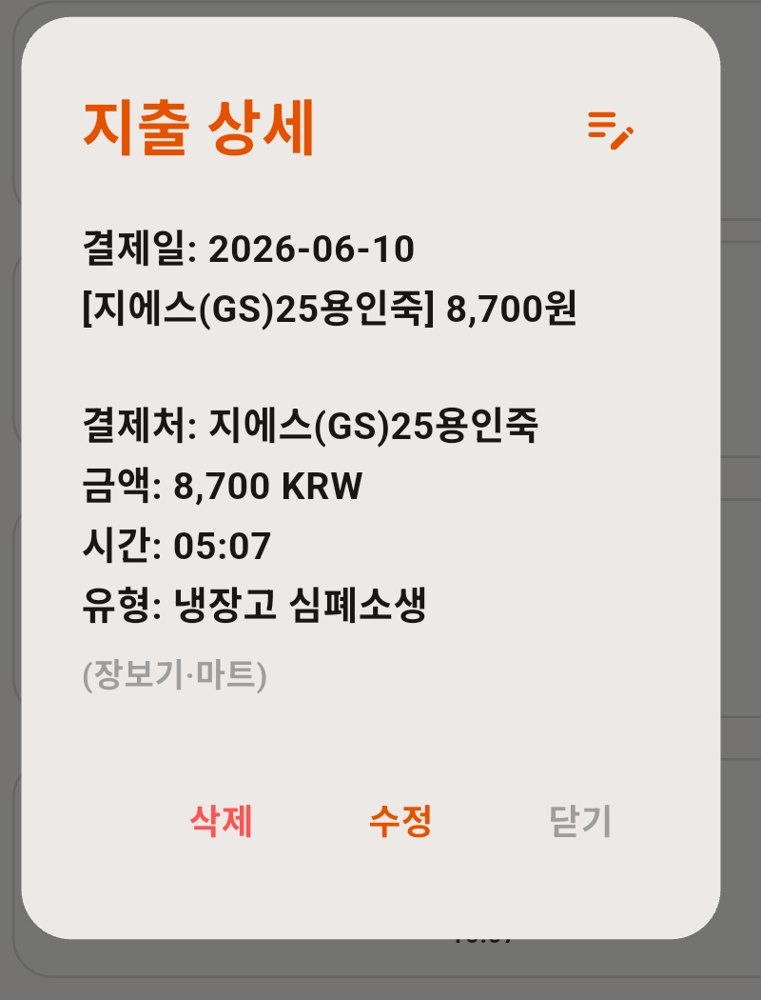
메모를 쓰고 저장하면 그 항목에 메모가 붙어요. 모든 지출 유형과 수입에 메모할 수 있고, 저장된 메모는 상세 팝업 맨 아래 "메모 : …"로 보입니다.
메모를 단 항목에는 목록에 📝 딱지가 붙어요. 지출은 미니 물탱크 오른쪽, 수입은 금액 줄 앞에 표시되고, 일간·월간 둘 다 나와서 어디에 메모를 달아놨는지 바로 보여요.
홈을 옆으로 스와이프한 2페이지에 "최근 메모" 카드가 있어요. 가계부에 단 메모들을 최신순으로 모아 보여줍니다.
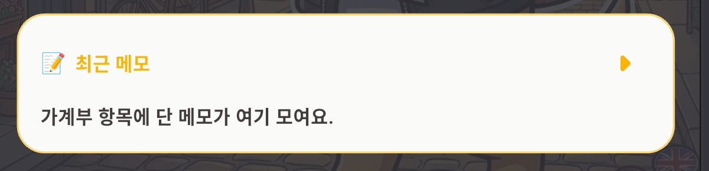
카드를 누르면 펼침/접힘(기본 3개 → 전체)이 되고, 메모 줄을 탭하면 그날의 일간 가계부로 바로 점프해요. 자동으로 일간 탭 + 그 날짜로 열리니, 거기서 항목을 찾으면 됩니다.